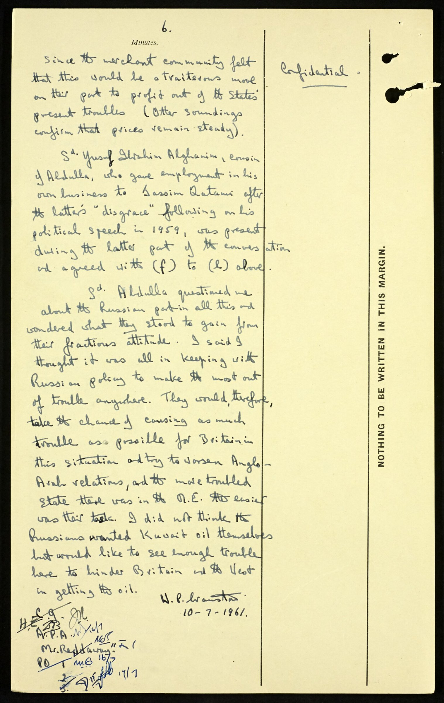

10 July 1961 · Handwritten minute by W. P. Cranston of the British Political Agency during the Iraq and Kuwait crisis
Yusuf Ibrahim Alghanim gave Jassim Qatami work after his 1959 speech
What it is
In notes of a conversation with Abdulla Alghanim at the height of the 1961 Iraqi threat to Kuwait, Cranston records that Yusuf Ibrahim Alghanim, Abdulla's cousin, joined the conversation. He describes Yusuf as the man who gave Jassim Qatami a job in his own business after Jassim's "disgrace" following his political speech in 1959.
Why it matters
It shows what happened to Jassim after his speech of 1 February 1959, when the British say he was rebuked by Sheikh Abdullah Al-Mubarak: a leading merchant family took him into its business.
Who is meant
The 1959 political speech is Jassim Al-Qatami's speech of 1 February 1959, whose record is already on this page. This is the same man.
Page copies

Original text
English translation
Notes
The name is spelled "Jasoim Qatami" in the minute. The rest of the page is about Russian policy and Kuwaiti prices and does not concern the family.
Others named
Sources
The National Archives, London, digitised by the Arabian Gulf Digital Archive (agda.ae). Images reproduced by permission of The National Archives, London, England.
Archive reference
- FO 1016/719 · Public and press opinion on Iraq-Kuwait crisis
How this text was made: Typed by Claude from the handwritten scan (the archive has no text reading for this page). … marks text left out. Arabic translation by Claude; please review.
Open in the interactive site